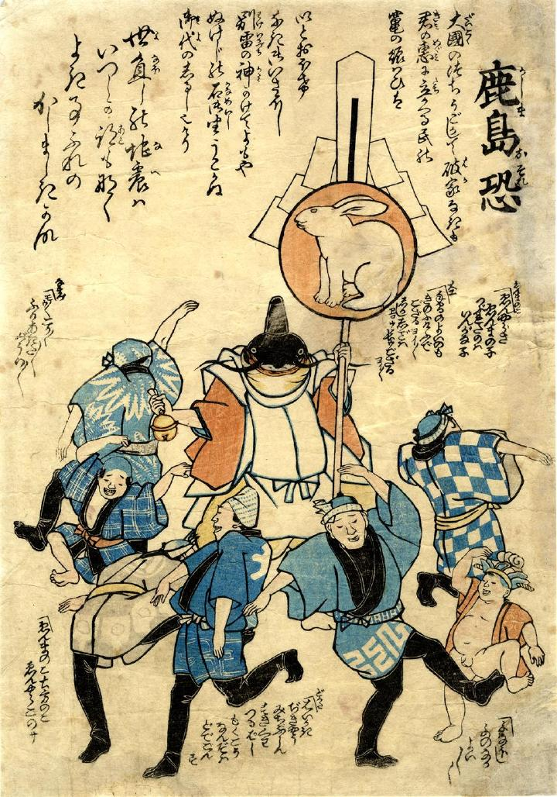

神官姿の鯰。兎が描かれた大幣を左手に、鈴を右手にもっている。その周りを男たちが踊っている。
出典：親書誌：U426_nichibunken_0244：鹿島恐；カシマオソレ／日付：2011／資源識別子：U426_nichibunken_0244_0001_0000
Copyright (c)2010- International Research Center for Japanese Studies, Kyoto, Japan. All rights reserved.